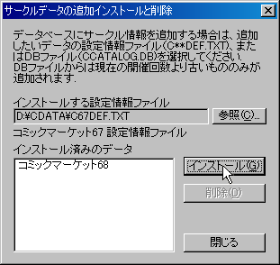
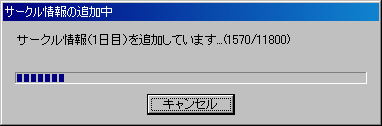
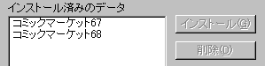
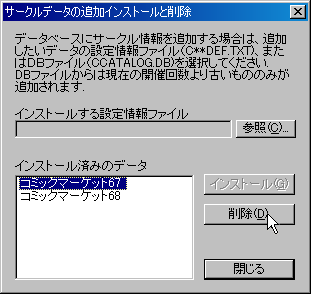
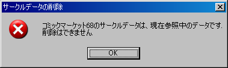
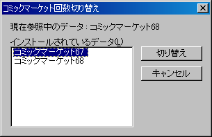

このDVD-ROMカタログブラウザは、参加サークルデータをデータベース形式で保持しています。
このデータベースには、特定のコミックマーケット1回きりのデータだけではなく、過去開催されたコミックマーケットのデータや今後開催されるコミックマーケットのサークルデータを追加し、複数回のコミックマーケットのデータを扱うことができるようになっています。
ここでは、データベースへのサークルデータの追加、データベースからのサークルデータの削除、及び参照するサークルデータの切り替えの方法について説明します。
サークルデータの追加や更新の作業の機能を使う場合は、あらかじめ個人用のデータベース を初期化する必要があります。これはインストール時に設定するか、 メインメニューの「ファイル」→「データベースの初期化」から行います。
指示に従ってダイアログをすすめるとデータベースが複製されて初期化されます。 手動でその場インストールした場合はこの作業を行う必要はありません。現在参照している版のデータの最新版がネットワーク上にあるかどうか 確認して、存在する場合はそのデータでデータベースを更新することができます。 これは、メインメニューの「ファイル」→「データのネット更新」から行います。
この機能を使うにはインターネットに接続していて、DVD-ROM カタログのサポートページが 参照できる必要があります。
ダウンロードしたファイルからサークルデータの更新を行います。
これは、メインメニューの「ファイル」→「データのファイル更新」から行います。
新しくサークルデータをデータベースに追加は、メインメニューの「ファイル」→「サークルデータの追加・削除」から行います。

「サークルデータの追加インストールと削除」ダイアログが表示されるので、「参照」ボタンを押して追加したいサークル情報の「設定情報ファイル」（C**DEF.TXT／**はコミックマーケット開催番号）を選んでください。
設定情報ファイルは、コミックマーケットDVD-ROMカタログに含まれて提供されます。
または、カタログデータベースファイルも選択できます。選択ダイアログでファイルの種類を「カタログブラウザDBファイル(ccatalog.db)」に切り替えて、以前の ccatalog.db を指定して下さい
正しくファイルを選択して「インストール」ボタンを押すと、ダイアログが表示されデータの追加が始まります。

正常にデータが追加された場合は、今回追加したデータが「追加済みのデータ」リストに登録されます。

追加してあるサークルデータの中から既に使用しなくなったデータを削除する場合も、追加時と同じようにメインメニューの「ファイル」→「サークルデータの追加・削除」から「サークルデータの追加と削除」ダイアログを呼び出します。

「追加済みのデータ」リストに追加されているサークルデータの一覧が表示されますので、削除したいデータを選び「削除」ボタンを押します。
なお、現在参照中のデータ（ブラウザが使用中のデータ）は削除することはできません。
この場合は、「コミックマーケット回数の切り替え」で参照データを切り替えた後に削除を行ってください。

表示や検索に使うサークルデータを別のコミックマーケット回数のものに切り替えます。
メインメニューの「ファイル」→「コミックマーケット回数切り替え」を選択すると、切り替えを行うためのダイアログが表示されます。

「データベースに追加されているデータ」リストに現在追加されているサークルデータの一覧が表示されますので、切り替えたいデータを選び「切り替え」ボタンを押すと、データの切り替えが実行されます。